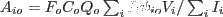
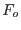
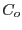
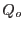
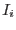
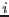
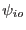
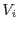

XMM-Newton Science Analysis System
arfgen (arfgen-1.93.1) [xmmsas_20170112_1337-16.0.0]
A cross-region ARF
Due to the finite size of the PSF in XMM, a fraction of photons which
are emitted from one part of the sky are detected at another position
on the detector. This is generally not a problem for point sources but for
regions of extended emission it can cause an extracted spectrum to be
a mix of flux from different areas of an object. It may be possible
to disentangle the true sky emission by simultaneously fitting
different spectral files. In this case an ARF giving the expected
contribution (effective area) of flux received in one area from
a different area is needed. This can be achieved by finding the
product of the usual effective area components at the position of
the output area with the energy-dependent encircled-energy fraction
contained in the output area due to flux from the input area.
i.e.

where  is the filter response,  is the chip gap and bad
pixel factor,  is the quantum efficiency,  is the relative
flux in a pixel  of the input region,  is the fraction of
the PSF which falls in the output region from this input pixel
and  is the vignetting at the position of the input region pixel.
XMM-Newton SOC/SSC -- 2017-01-12